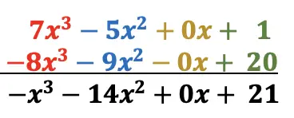

Resta de Polinomios
Para restar dos o más polinomios, solo tenemos que combinar términos semejantes y considerar el orden de las operaciones. Algo importante que debe ser tomado en cuenta es distinguir los términos con signos “más” y “menos” en cada polinomio.
Seguimos los siguientes pasos para restar polinomios:
Paso 1: Eliminar todos los paréntesis. Para facilitar la visualización, es recomendable escribir el problema y cada proceso de forma vertical. Cuando eliminamos los paréntesis, tenemos que distribuir el signo negativo, lo cual hará que cada uno de los términos cambie de signo.
Paso 2: Combinar términos semejantes. Si es que escribimos los pasos de forma vertical, la combinación de términos semejantes resulta más fácil. Recuerda que, los términos semejantes son términos que tienen las mismas variables con los mismos exponentes.
